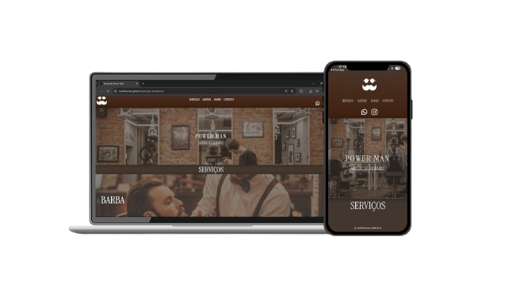
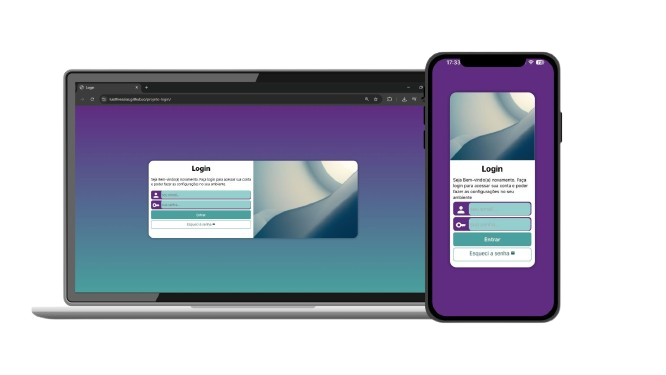
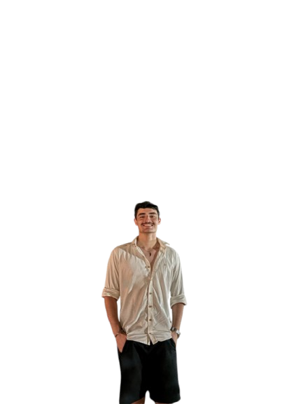

Olá! Meu nome é
Luis Fernando


Bem-Vindos ao meu portifólio!
Habilidades

JavaScipt
Domínio de conceitos de lógica de programação, manipulação do DOM, eventos e criação de interfaces dinâmicas e interativas.

HTML5
Experiência sólida na criação de estruturas semânticas para sites modernos, garantindo acessibilidade e boa organização de conteúdo.

CSS3
Capacidade de desenvolver layouts responsivos, aplicar animações e estilizações modernas focadas em usabilidade e design clean.
Projetos

Site de uma barbearia
Acesse aqui o site

Site de formulario de login
Acesse aqui o site
Esse sou eu.
Estudante Web fascinado por Front-end
- 🎯 Focado em Front-end.
- 🎓 Estudante de Análise e Desenvolvimento de Sistemas.
- 👨💻 Experiência com projetos práticos.
- 🚀 Em constante evolução.